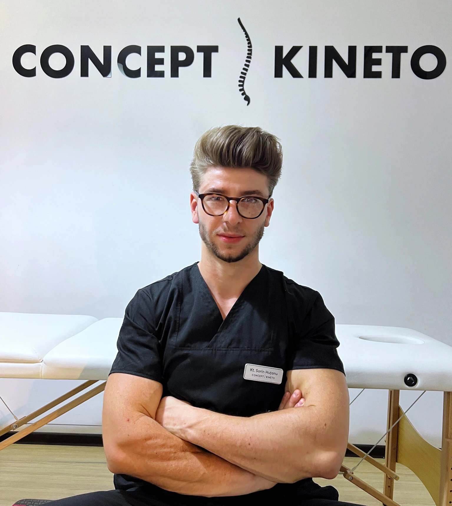
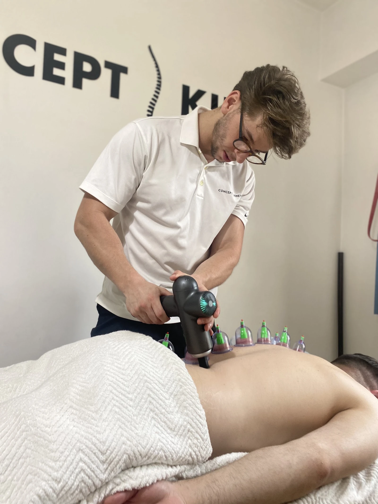
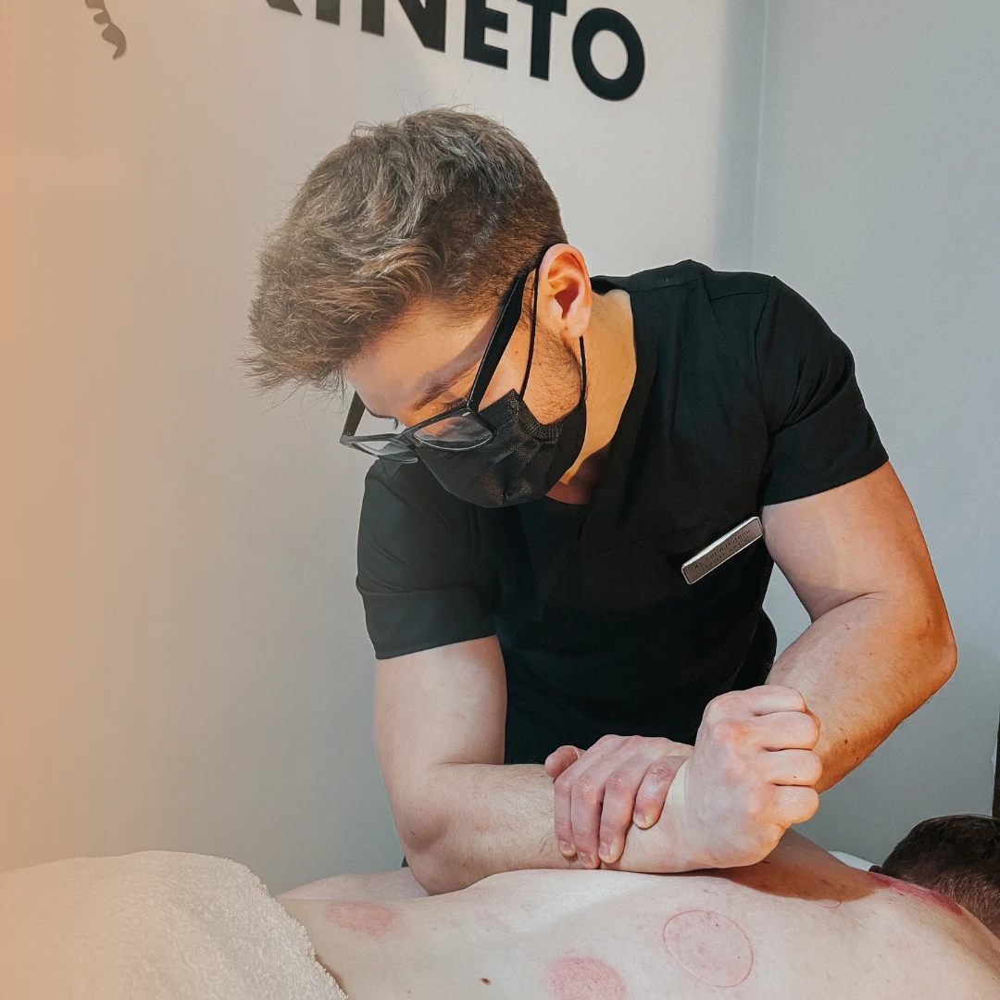
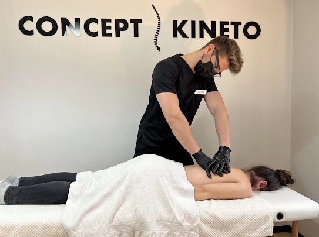
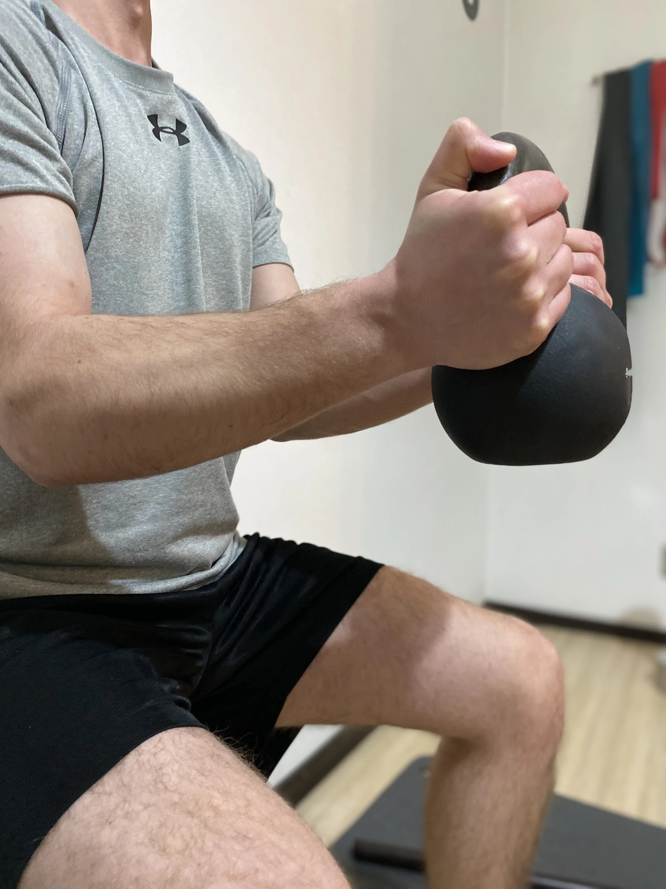
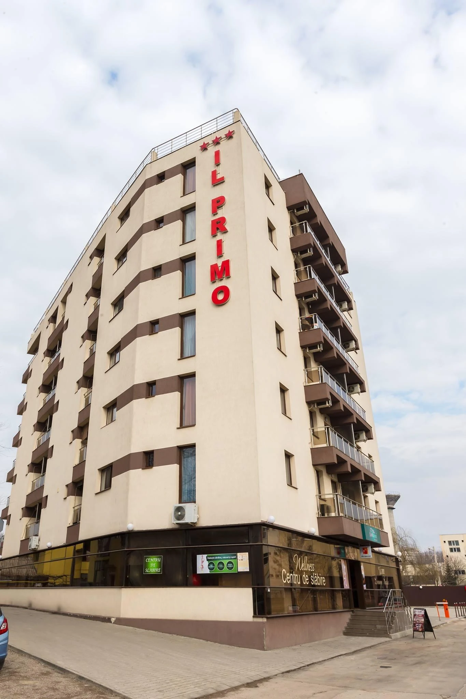
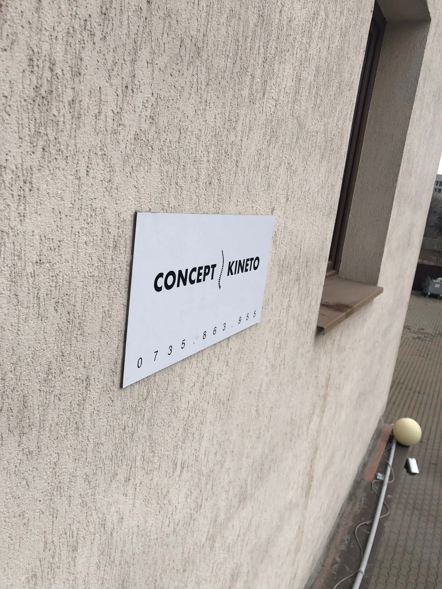

{{Fizioterapeut · Strada Anastasie Panu 26, Iași|Physiotherapist · Strada Anastasie Panu 26, Iași|Fisioterapeuta · Strada Anastasie Panu 26, Iași}}
Concept Kineto{{Fizioterapie în Iași, cu terapie manuală și mișcare.|Physiotherapy in Iași, with manual therapy and movement.|Fisioterapia em Iași, com terapia manual e movimento.}}
{{Spune-ne zona, nu diagnosticul. Sună sau cere o ședință, iar detaliile le discutați la cabinet.|Tell us the area, not the diagnosis. Call or request a session and discuss the details at the clinic.|Diga-nos a zona, não o diagnóstico. Ligue ou peça uma sessão e falem dos detalhes no consultório.}}

{{Ședința|The session|A sessão}}
{{Mâini, aparat, mișcare.|Hands, device, movement.|Mãos, aparelho, movimento.}}
{{Așa apare cabinetul în fotografiile profilului: pat de terapie, perete cu sigla, terapeut în negru.|This is how the clinic appears in its profile photos: a therapy bed, the logo wall, the therapist in black.|É assim que o consultório aparece nas fotografias do perfil: marquesa, parede com o logótipo, terapeuta de preto.}}
- 01{{Terapie manuală (menționată în recenzii)|Manual therapy (mentioned in reviews)|Terapia manual (referida nas opiniões)}}
- 02{{Aparat de masaj cu percuție, în fotografii|Percussion massage device, in the photos|Aparelho de massagem por percussão, nas fotografias}}
- 03{{Ventuze, în fotografii|Cupping, in the photos|Ventosas, nas fotografias}}
{{Lista completă a serviciilor și durata ședinței: de confirmat.|Full list of services and session length: to be confirmed.|Lista completa de serviços e duração da sessão: a confirmar.}}




{{Zone|Areas|Zonas}}
{{Spune-ne unde.|Tell us where.|Diga-nos onde.}}
{{Nouă zone din care alegi când ceri o ședință. Nu e nevoie de diagnostic: spui zona, restul se discută față în față.|Nine areas to pick from when you request a session. No diagnosis needed: name the area, the rest is discussed in person.|Nove zonas para escolher ao pedir uma sessão. Não precisa de diagnóstico: diz a zona, o resto fala-se pessoalmente.}}
- 01{{Gât|Neck|Pescoço}}
- 02{{Umăr|Shoulder|Ombro}}
- 03{{Spate superior|Upper back|Costas (parte superior)}}
- 04{{Zona lombară|Lower back|Zona lombar}}
- 05{{Braț, cot, mână|Arm, elbow, hand|Braço, cotovelo, mão}}
- 06{{Șold|Hip|Anca}}
- 07{{Genunchi|Knee|Joelho}}
- 08{{Gleznă, picior|Ankle, foot|Tornozelo, pé}}
- 09{{Altă zonă|Another area|Outra zona}}
{{Dacă exercițiile din fotografii fac parte din ședințe: de confirmat.|Whether the exercises in the photos are part of the sessions: to be confirmed.|Se os exercícios das fotografias fazem parte das sessões: a confirmar.}}
{{Recenzii Google|Google reviews|Opiniões no Google}}
{{Ce spun pacienții, pe scurt.|What patients say, in short.|O que dizem os pacientes, em resumo.}}
{{Personal amabil, atent la toate zonele și cu o comunicare bună cu pacientul.|Friendly staff, attentive to every area, with good communication with the patient.|Pessoal simpático, atento a todas as zonas e com boa comunicação com o paciente.}}{{sensul recenziilor publice, parafrazat|general sense of public reviews, paraphrased|sentido das opiniões públicas, parafraseado}}
{{O stare de bine după ședință, apreciată de pacienți.|A feeling of wellbeing after the session, appreciated by patients.|Uma sensação de bem-estar depois da sessão, apreciada pelos pacientes.}}{{sensul recenziilor publice, parafrazat|general sense of public reviews, paraphrased|sentido das opiniões públicas, parafraseado}}
{{Pacienți care recomandă cabinetul cu încredere.|Patients who recommend the clinic with confidence.|Pacientes que recomendam o consultório com confiança.}}{{sensul recenziilor publice, parafrazat|general sense of public reviews, paraphrased|sentido das opiniões públicas, parafraseado}}
{{Programare|Appointment|Marcação}}
{{Alege zona. Noi te sunăm.|Pick the area. We call you back.|Escolha a zona. Nós ligamos.}}
{{Zona și, dacă vrei, ce te aduce. Fără promisiuni, fără diagnostic: cabinetul te sună pentru ziua și ora ședinței.|The area and, if you like, what brings you. No promises, no diagnosis: the clinic calls you for the day and time.|A zona e, se quiser, o que o traz. Sem promessas, sem diagnóstico: o consultório liga-lhe para o dia e a hora.}}
{{Contact|Contact|Contactos}}
{{Strada Anastasie Panu 26.|Strada Anastasie Panu 26.|Strada Anastasie Panu 26.}}
{{Clădirea și placa de la intrare apar în fotografii. Acces fără trepte: de confirmat.|The building and the entrance plaque are in the photos. Step-free access: to be confirmed.|O edifício e a placa da entrada aparecem nas fotografias. Acesso sem degraus: a confirmar.}}

